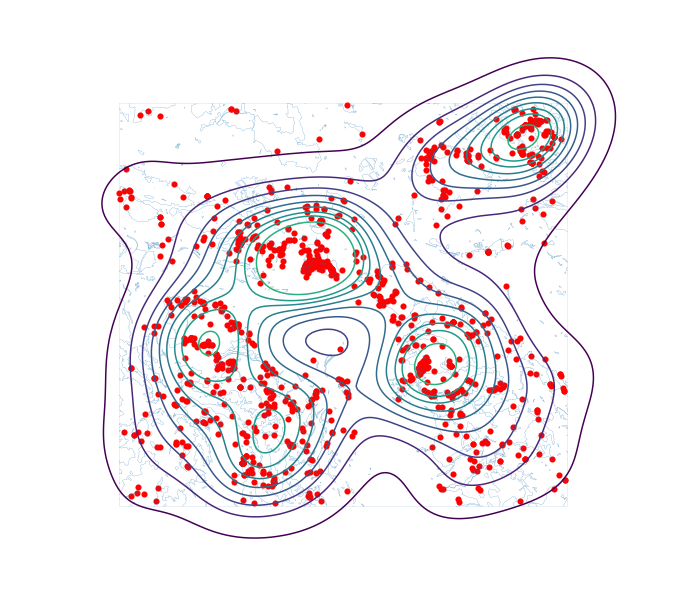
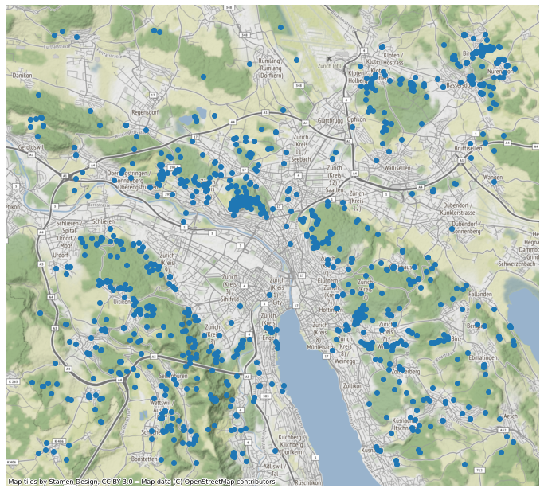
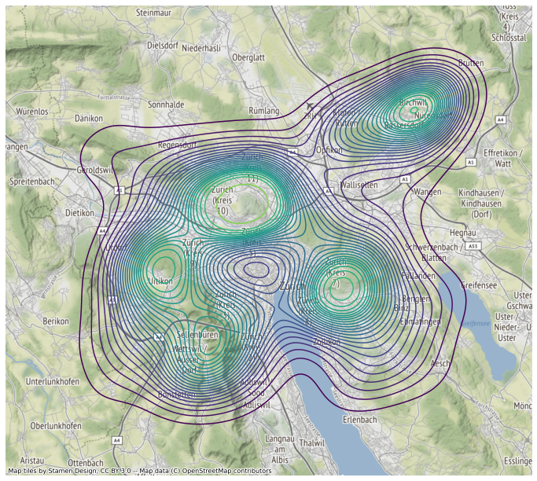

Anhang 1: Geodaten visualisieren¶
In folgenden Beispielen zeigen wir noch ein paar einfache Wege, wie ihr die Zeckenstichdaten visualisieren könnt.
import pandas as pd
import geopandas as gpd
import matplotlib.pyplot as plt
import descartes
zeckenstiche_full = pd.read_csv("data/zeckenstiche_full.csv")
wald = gpd.read_file("data/wald.gpkg")
zeckenstiche_gpd = gpd.GeoDataFrame(zeckenstiche_full,
geometry=gpd.points_from_xy(zeckenstiche_full['x'], zeckenstiche_full['y']),
crs = 2056)
/opt/hostedtoolcache/Python/3.7.12/x64/lib/python3.7/site-packages/geopandas/_compat.py:115: UserWarning: The Shapely GEOS version (3.9.1-CAPI-1.14.2) is incompatible with the GEOS version PyGEOS was compiled with (3.10.0-CAPI-1.16.0). Conversions between both will be slow.
shapely_geos_version, geos_capi_version_string
Kernel Density Plot¶
Mit der Erweiterung seaborn lassen sich mit wenigen Zeilen Code eine Kernel Density rechnen und visualisieren. Siehe nachstehenden Code:
import seaborn as sns
f, ax = plt.subplots(1, figsize=(12, 12))
wald.boundary.plot(linewidth=0.1, ax=ax)
zeckenstiche_gpd.plot(color='red', linewidth=0.1, ax=ax)
sns.kdeplot(x = zeckenstiche_full.x, y= zeckenstiche_full.y,shade = False,n_levels = 10, cmap = "viridis", ax = ax)
ax.set_axis_off()
plt.show()

Hintergrundkarte¶
Mit der Erweiterung contextily kann man sehr schnell und einfach Hintergrundkarten in den Plot einbinden. Dafür muss das GeoDataFrame vorher aber in WGS84 Koordinaten (EPSG 3857) konvertiert werden (mit to_crs, s.u.).
import contextily as ctx
f, ax = plt.subplots(1, figsize=(12, 12))
zeckenstiche_gpd.to_crs(epsg = 3857).plot(ax = ax)
ctx.add_basemap(ax)
ax.set_axis_off()
plt.show()

KDE mit Hintergrundkarte¶
Kernel Denisty und Hintergrundkarte können auch kombiniert werden:
lat = zeckenstiche_gpd.to_crs(epsg = 3857).geometry.x
lng = zeckenstiche_gpd.to_crs(epsg = 3857).geometry.y
f, ax = plt.subplots(1, figsize=(12, 12))
sns.kdeplot(x = lat,y = lng,shade = False,n_levels = 25, cmap = "viridis", ax = ax)
ctx.add_basemap(ax)
ax.set_axis_off()
plt.show()
